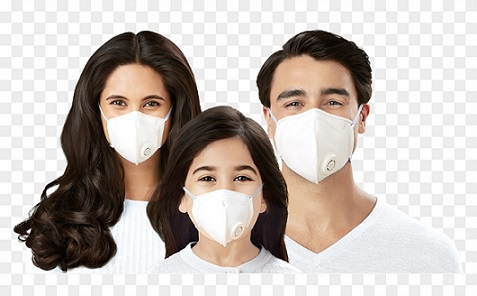
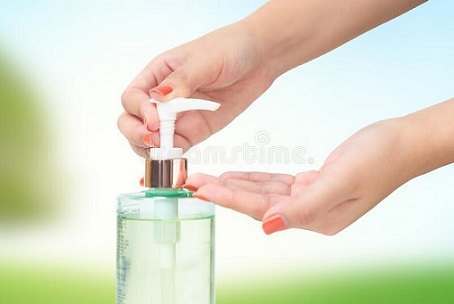
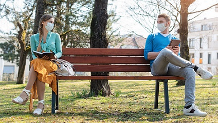
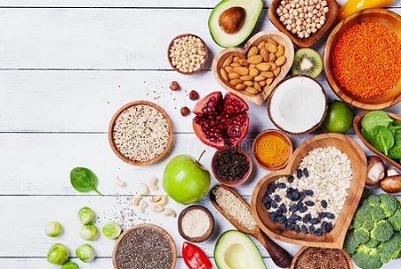

Wear Your Mask

Wearing a medical mask can help limit the spread of some respiratory diseases. However using a mask alone is not guaranteed to stop infections. Learn more. Learn about Coronavirus. Your questions answered. Recommendation from WHO. Official WHO website.
Sanitize Your Hands

Hand sanitizer (also known as hand antiseptic, hand disinfectant, hand rub, or handrub) is a liquid, gel or foam generally used to kill the vast majority of viruses/bacteria/microorganisms on the hands.
Social Distancing

Social distancing is staying away from crowds or congregations of 10 or more people with the intent of minimizing transmission of infectious disease outbreaks.This pandemic is changing the lives of people, including the lives of young people. A collection of information, links, and resources that can support young people.
Have Some Healthy food

Dried fruit is fruit from which the majority of the original water content has been removed either naturally, through sun drying, or through the use of specialized dryers or dehydrators.